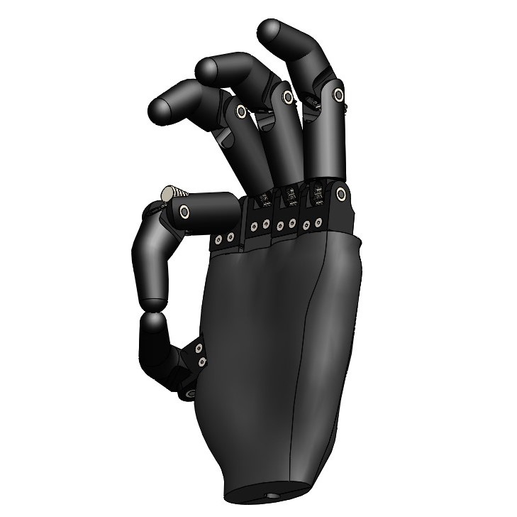
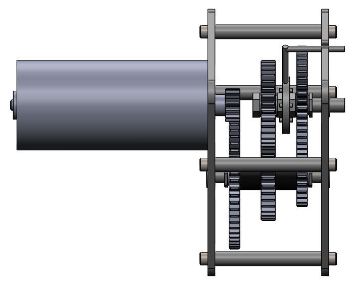

Date
August-December 2018
Class
Mechanical Design
Through five major CAD projects over the semester, I learned about the application and analysis of various mechanical assemblies while also expanding on my CAD experience. These projects involved meeting certain design criteria and thinking through the manufacturing and assembly methods (as outlined in a few sample reports below). Aside from the technical criteria, the design studies themselves could be any mechanism that could feasibly be created, and I chose to focus my designs around the themes of assistive technology and accessibility.
The images shown below represent three different projects from the semester: the actuated hand was my final project, the button table and shifting gearbox are from the second project focusing on different types of gearboxes, and the actuated foot and grabber are from the first project focusing on cams and four-bar linkages.
The final actuated hand assembly is modeled off of human hand proportions and achieves realistic geometry for gripping, pointing, and other necessary motions. The design is inspired by the Ottoblock bebionic hand, but all parts (aside from several screws) are designed and CADed from scratch.
The finger subassembly of the actuated hand shows two integrated motors that power two joints independently to achieve various finger positions. Several use cases were suggested and corresponding force/stress analyses show that these fingers would hold up with a reasonable factor of safety.

The hand as a whole is designed for easy manufacturing and assembly with most parts being 3D-printed and the palm pieces pressing together and sliding down a slot to lock into place. Where possible, part geometry and configurations are used to securely hold parts together in place of heavy fasteners or weakened joints.
The buttons on top of this turn table can rotate to different positions because of the mechanical combination of a planetary gearbox with a position controlled stepper motor. This would allow someone with limited hand mobility to have access to several buttons from one fixed position because they could use an alternate switch to rotate the table until the desired button was within their reach.
This gearbox makes use of a custom dog gear to engage the desired gear and modify the output gearing ratio within a compact transmission.
Report 2: Shifting and Planetary Gearboxes.
This underactuated foot system uses a specialized cam and follower to absorb different amounts of shock in reaction to forces applied to the flexible rubber foot piece.
This simple grabber uses a four-bar linkage to extend the users reach and grasp objects without the user having to apply their own gripping power.